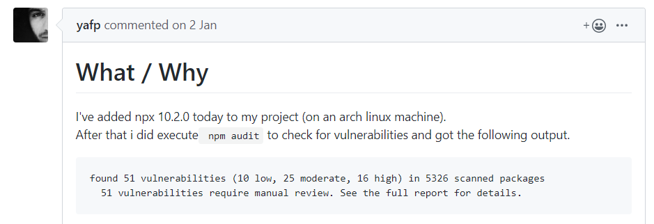

NPX
- Marcos Álvarez García | UO251182
- Carmen Vigo Rodríguez | UO264045
- Jesús Quesada Matilla | UO263624
- Víctor Gonzalo Cristóbal | UO264074
What is NPX?
It is a npm package executor
How to use it
It is included in npm version 5.2.0 (July 2017)
What it does
- Download
- Install
- Execute
- Delete
Advantages
- Always up-to-date packages
- Testing CLI tools
Issues
- Asking Questions
- Reporting Bugs
- Asking for new Features
The Project Team
- Regular contributor
- Issue tracker
- Committer
- Admin/Owner
Contributing
- Answering issues
- Documentation
- Code
Bug Example
 [QUESTION] Vulnerabilities in npx 10.2.0
npm audit
npm install npx
npm audit
Contributing
Guidelines to follow when PR, Commiting, creating an Issue...
Issues
- Bugs
- Feature Requests
- Bugs
- Feature Requests
Commits
- "Write tests that verify that your contribution works as
expected."
- "Write clear, concise commit message(s) using
conventional-changelog format."
- "Write tests that verify that your contribution works as expected."
- "Write clear, concise commit message(s) using conventional-changelog format."
feat(pencil): add 'graphiteWidth' option
fix(graphite): stop graphite breaking when width < 0.1
Modules
Npx has been developed as a single module
/bin, /locales, /test
Stakeholders
Kat Marchan
Isaac Z. Schlueter
You
Quality Attributes
- Security
- Maintainability
- Usability
- Security
- Maintainability
- Usability
How to compile?

npm install
make
cd bin/

node index.js create-react-app [name-of-the-app]